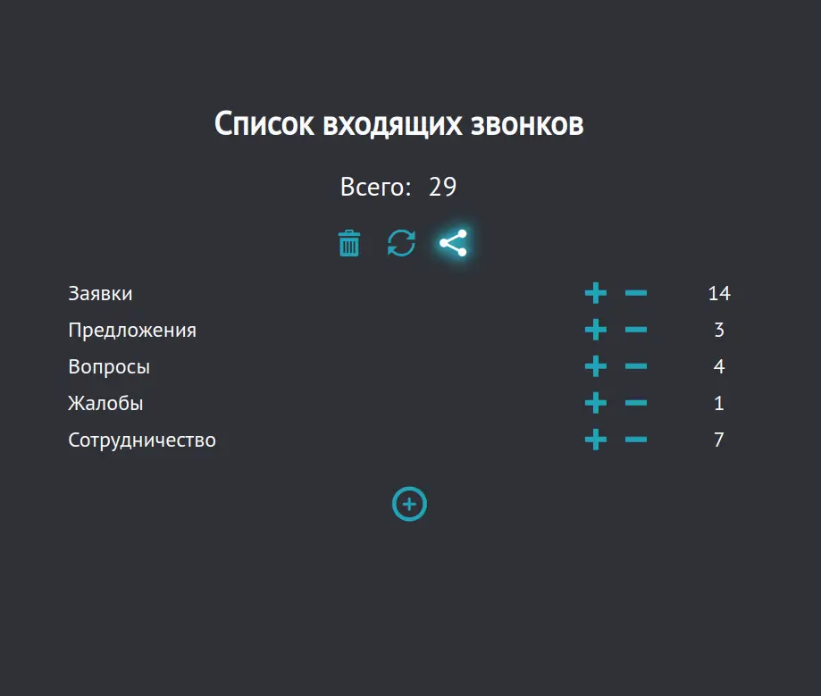
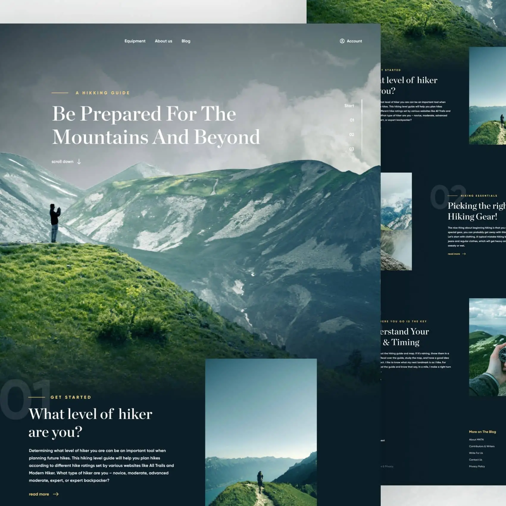
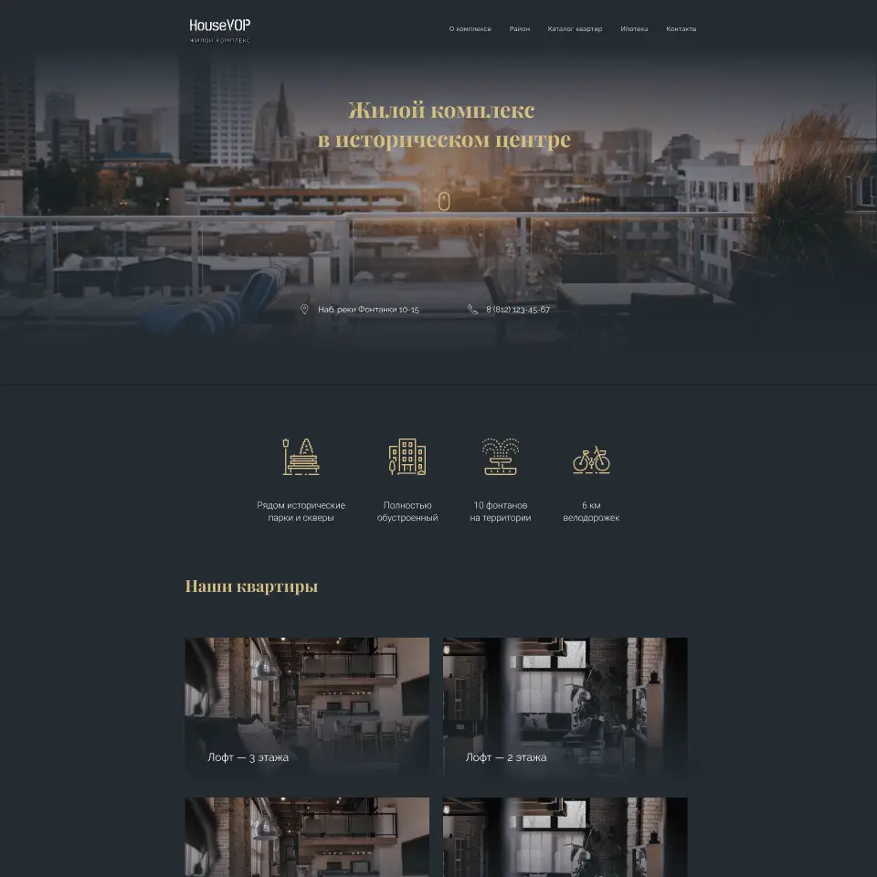
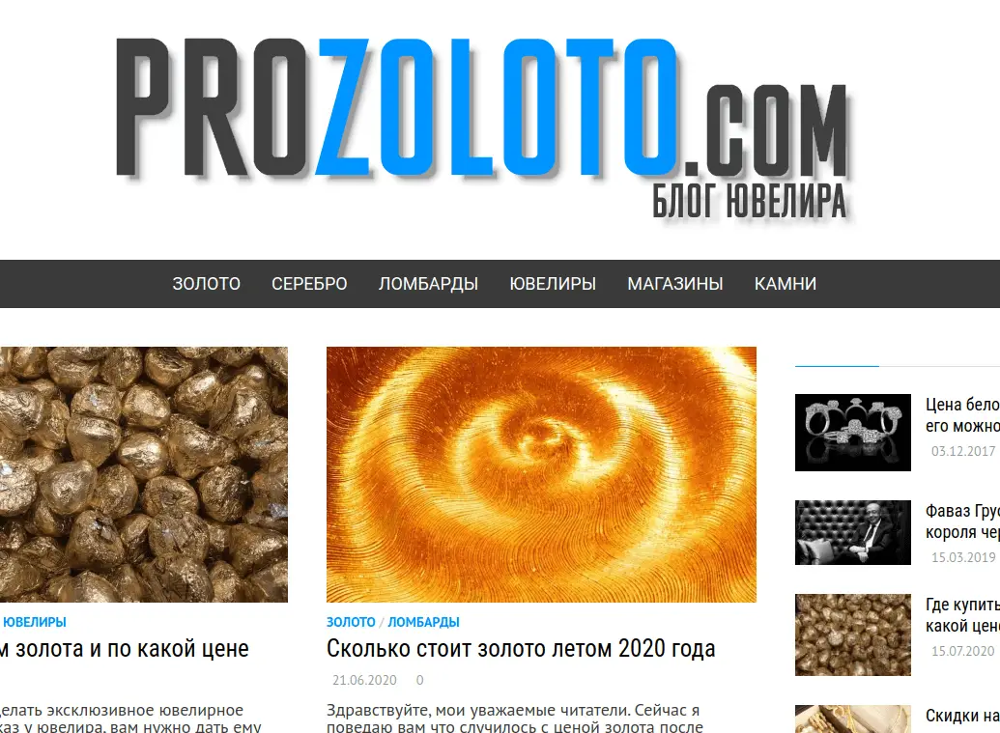
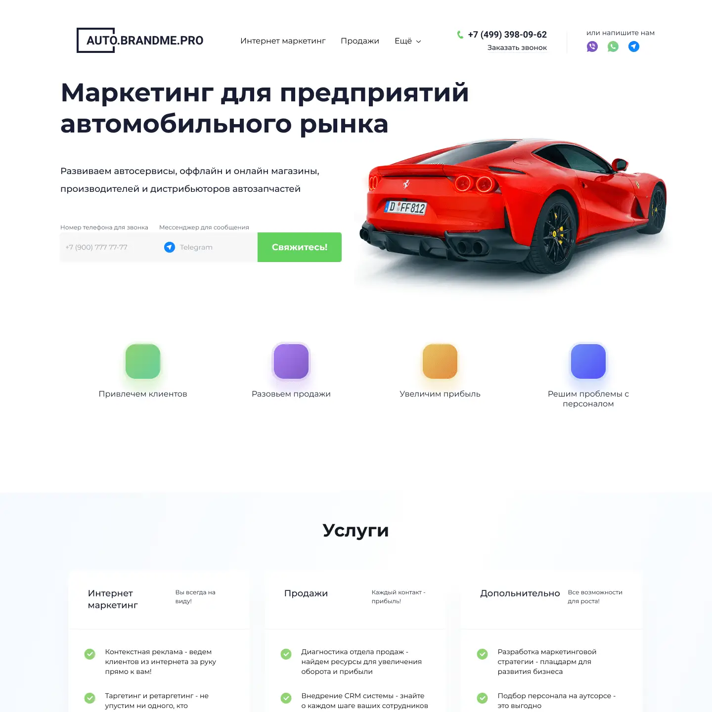
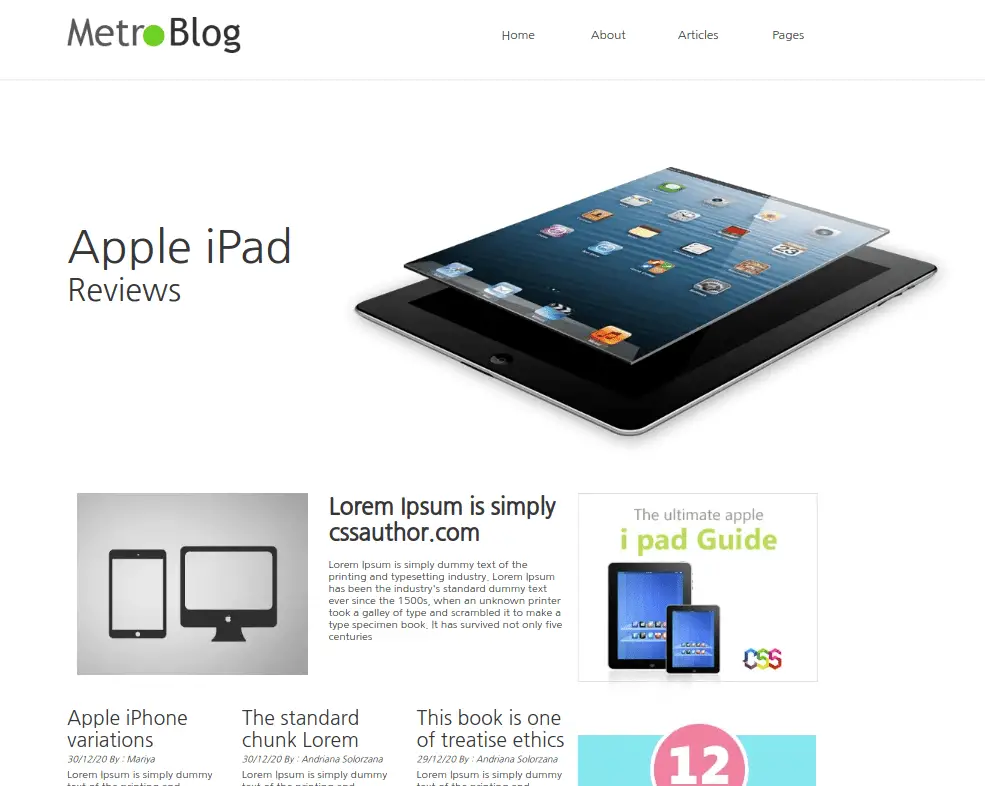

На пандемии нас посадили за телефон. Мне нужен был инструмент для быстрой фиксации звонков и составления отчёта в конце дня. Когда я не нашёл ничего кроме Google таблиц (что было не удобно), решил реализовать такой инструмент самостоятельно, заодно и изучить jQuery. Счётчик работает с local storage.
Дмитрий
Гордиенко
Ювелир по профессии
Рекламист по образованию
Разработчик по зову сердца
About:
Мне 34 года. Я женат, двое детей, у меня хорошая работа (не связанная с IT). Занимаюсь обучением новых сотрудников в ювелирной отрасли.
Много лет я увлекаюсь компьютерами и интернетом, как хобби. Мне повезло накопить большую базу знаний, которая помогает легко обучаться новым технологиям. Сейчас я увлекаюсь созданием сайтов, чередуя с изучением Python.
Soft skills:
Английский: читаю документацию без переводчика.
Стрессоустойчивость, многозадачность и ответственность - для меня не просто слова.
Перфекционизм - часто очень мешает.
Hard skills:
HTML / CSS / SCSS / BAM / Adaptive / MobileFirst / Figma / Avocode / PS / Wordpress / SEO
JS / jQuery / VUE.js [in progress] / Python [in progress]
Gulp / Webpack / git ( GitHub, Bitbucket ) / Linux


Бесплатный Figma макет, найденный на просторах интернета в целях тренировки. Мне захотелось реализовать Parallax эффект и постараться всё сделать на ванильном JS.

Ещё один бесплатный макет, который мне понравился. Всё на флексах. Интересно эксперементировать с PUG и SCSS.

Один из самых старых и любимых моих проектов. Сюда я пишу статьи на тему моей проффессиональной деятельности и эксперементирую с SEO.

Лендинг для предполагаемой маркетинговой компании. Вёрстка по макету Figma. Была задача сделать быстро и максимально просто. Мобильная версия под 425px.

После летнего перерыва в вёрстке, хотелось начать с чего-нибудь простого. Сетка построена на флексах. Только десктоп версия.